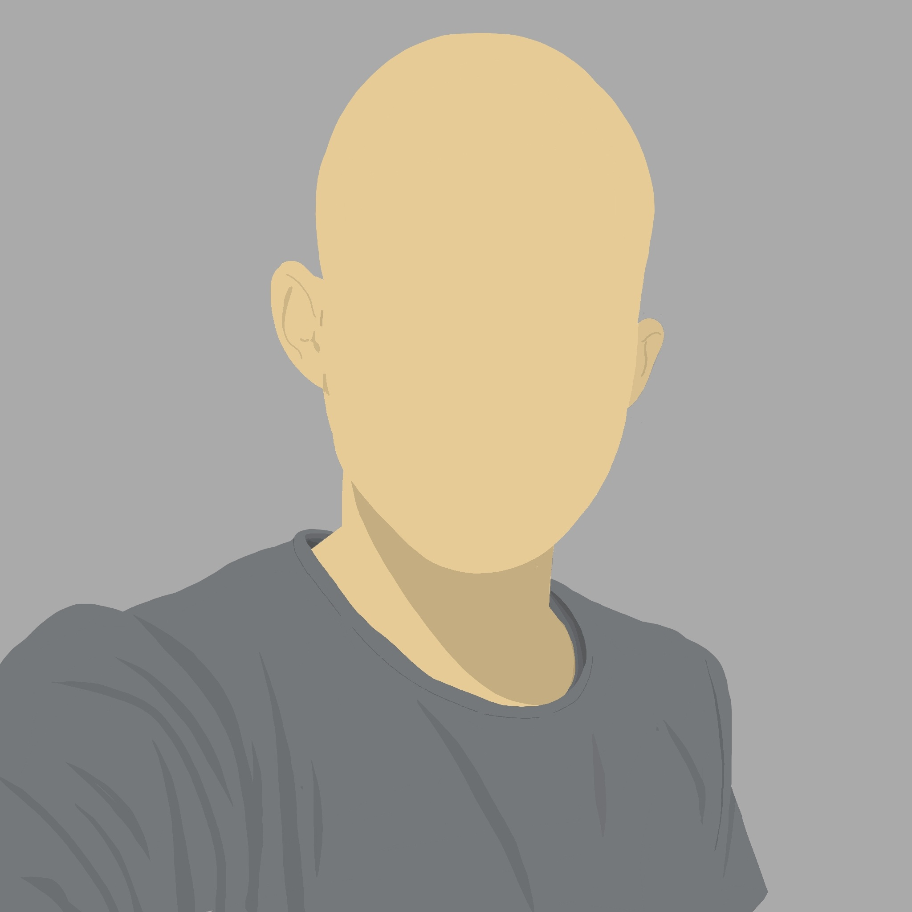

Välkommen till tT-WOD

Hej!
Jag är en skivstångsfantast från Skåne som inte bara gillar träningen i sig själv, men även all planering runtomkring. Jag lägger gärna lite extra tid för att se till att träningen blir effektiv, heltäckande och anpassad till hur min vecka ser ut.
Träning och inspiration
På denna webbsida kan du ta del av mina tankar kring allt från träning, träningsupplägg, utrustning och resurser som jag värdesätter. Utöver det kan man även följa min träningshistorik och ta del av artiklar jag skriver.